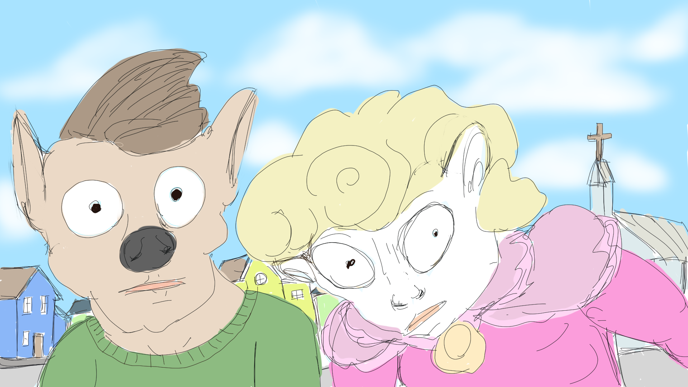
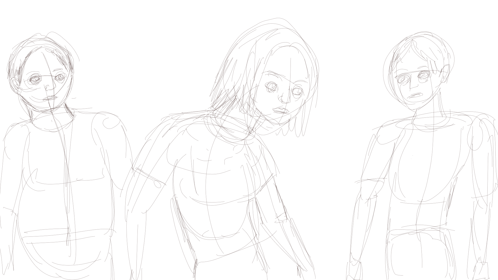
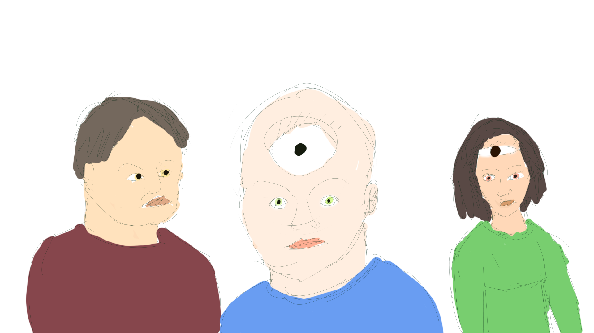
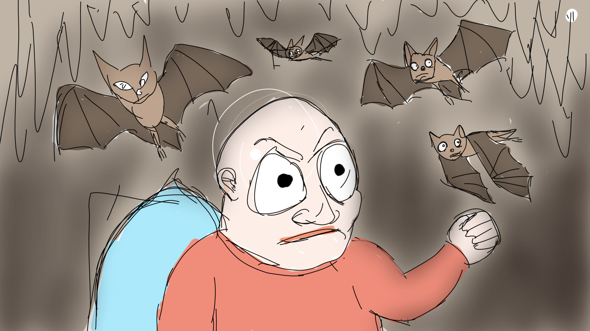
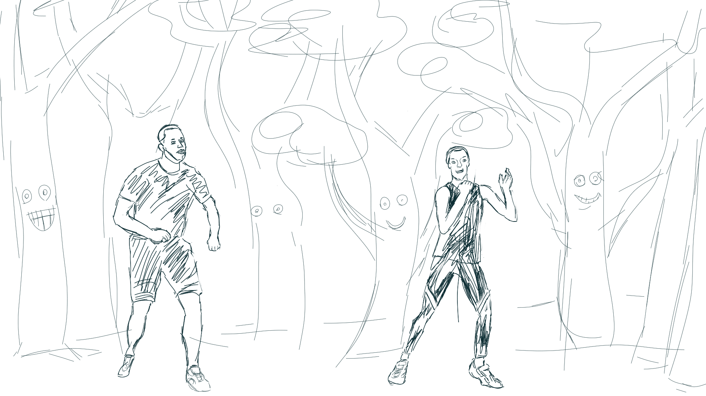

Listening to another Game Developers Conference video like I'm known to do while making these. This speaker is doing a talk on AI artists. I should worry about AI art however I should be a little more worried about AI programing, and then - AI overlords I guess. I think that I may have made a repeat of the character from my first drawing (in the form of a sheep woman).
February 2st 2024
I'm considering whether I might want to go into the trades after this round of school.
February 3rd 2024
February 4th 2024
February 5th 2024
February 6th 2024
February 7th 2024

February 8th 2024
February 9th 2024

February 10th 2024
February 11th 2024

February 12th 2024
February 13th 2024

Don't mind the gap in comments here. I started to heed my own warnings about data tracking and decided to follow my own advice. So as a happy medium from now on I will only comment on my art. I have decided to start this up again because I started to do interesting things with my drawing. Today I was demonstrating to a friend how to do a trace in my app and decided that I liked doing traces quite a bit. I've decided that I will do traces for some more sketches in the future (or at least side by side sketches like I did with the tigers) since I might need to do this to answer some questions about anatomy and other things to do with figure drawing.